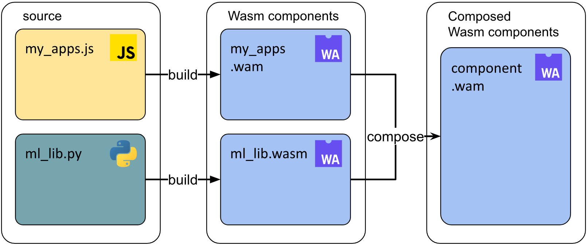
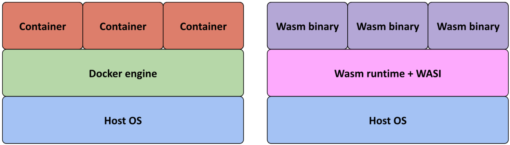

Our write-up on Server-side WebAssembly. Also posted on Medium.
By Skaara Poncin, Storm van Loon & Gabriel Uwaila - 26 March 2026
Every few years, a new creature emerges in the world of software and promises to change everything. In 2017, the four major browser vendors – Google, Microsoft, Mozilla and Google – conjured up such a feature: WebAssembly, or wasm for short. The idea was to solve JavaScript’s performance problems by giving developers a way to compile code written in Rust, C++ or Go into a compact binary that browsers could run at near-native speed. The results were surreal: Google Earth came to the browser, Figma cut loading speeds with 3x and Photoshop found its way to the web.
But the story did not stop at the browser. Developers noticed that wasm’s core properties – portability, security, and tiny file size – were just as valuable on the server. A new chapter began, and with it, a new set of promises: startup times up to a thousand times faster than containers, binaries up to 90% smaller, a sandboxed security model where modules can only access what they are explicitly granted, and cross-language interoperability that lets you compile once and run from any language on any architecture.
These are very bold claims, so we sought out to test them. Our quest: to explore server-side WebAssembly in practice and find out whether the legend holds up, and where it falls short.
Before splitting up to explore the different corners of wasm’s ecosystem, we needed a shared understanding of how
the beast actually works. A wasm app starts as code written in a supported language and gets compiled into a
.wasm binary. On the server, a dedicated runtime is needed to load and execute that binary. The
runtime
validates the binary, compiles it to machine code and runs it in a sandbox. We liked Wasmtime the most out of
all runtimes, due to its support.
Wasm itself has no access to the outside world. Things like filesystem, network or timers are all provided through WASI – the WebAssembly System Interface. This is a standardized set of APIs that must be explicitly granted to an application. While this may sound negative, it’s actually a benefit: this means that a module can only do what it’s been given permissions to do and makes the security model robust by design.
WASI has evolved through multiple versions. Preview 2 introduced the Component Model, which allows
modules written in different languages to be combined into a single application, with each component running in
fully isolated memory.

With these basics understood, we divided the territory and rode out.
One of wasm’s most compelling promises, is the ability to compile code from any language and use it in another, regardless of operating system or CPU architecture. WIT – WebAssembly Interface Types – makes this even easier. It lets a host and guest application agree on types and functions, without caring what either was written in.
In practice, language support varies considerably. Rust is the clear leader: full WASI preview 2 support is built into the standard toolchain and wasmtime itself was written in Rust – making the integration seamless. Other languages like Go require TinyGo – a third party compiler, C++ works but only through a complex, multi-step process. Finally, Python, being interpreted, can’t compile to a guest module, but can be compiled to a guest component.
This uneven support became a real problem during our testing. We attempted to run multiple combinations of languages together – one being the Python component with a Java host application using GraalWasm. Unfortunately, GraalWasm only supports modules, not components. This is not a fundamental wasm flaw, but an adoption problem. Yet it still remains the key limitation for teams hoping to develop cross-language today.
When it works though, the technology is genuinely impressive. A Rust library compiled to wasm can be called from a Python host without any issues, while being secure in the meantime. So, the foundation is solid – the ecosystem just needs to expand.
The comparison between Wasm and containers was where the hype reached its peak. Docker’s own co-founder
mentioned that “Docker wouldn’t have been created if WebAssembly had existed”. Wasm binaries need no underlying
operating system, just a runtime and application.

Unfortunately, Docker Desktop support was deprecated at the time of research, without any explanation. While there are no official statements, relying on Docker Engine seems too risky to migrate if support can get rescinded at any moment.
Kubernetes was the next dungeon we aimed to explore. Many projects within the wasm ecosystem advertise Kubernetes integration, but the marketing often fell short. Standalone runtimes like Wasmtime and WasmEdge are explicitly advertised to work with just the wasm app – even with the extra steps needed to get it working. However, even these extra steps did not change the story. Alternatives like k3d and Krustlet are not much help either – they either depend on docker support, or haven’t been updated in four years.
Two more promising paths, WasmCloud and SpinKube, could not be fully analyzed within the project’s timeframe. WasmCloud offers its own orchestration layer for wasm components, with NATS-based messaging between hosts, self-healing and scaling. SpinKube integrates Spin, a wasm deployment platform with pre-made templates for HTTP and Redis, directly into a Kubernetes cluster via CRDs. Both approaches look promising, although they both have their own overhead compared to running wasm binaries natively.
In theory, wasm containers could change the whole server world. The performance is leaps ahead of its counterparts, yet the deployment infrastructure has not yet caught up.
Edge computing – running code closer to users on CDN networks and serverless platforms – turned out to be where server-side wasm was the most at home. While this space did not get much time in the spotlights, behind the scenes, companies like Cloudflare and Akamai were quietly implementing wasm binaries to run these workloads. Cold starts for these platforms are not sub-millisecond.
When developing our own HTTP servers in Rust, Go and C++, we noticed support was surprisingly good. In all three languages, there were few issues due to wasm specifically.
Nowadays, AI is like a goldmine – so there was no way we could overlook the matter. Rather than keeping AI logic in a separate Python service, we experimented with compiling inference code in Rust, loading an ONNX model once and caching it – and running it as a wasm component. The results were astounding: in our demo, the whole process took just two seconds. There weren’t only advantages in just our demo. Overall, wasm is shown to cut down on learning times by twice the amount, while reducing memory usage to even ten times – a major factor during these memory shortages.
The edge is where wasm’s strengths align the best with what the environment demands: small binaries, fast cold starts and a secure sandbox are just what serverless and edge need.
After our conquest of tackling this many-faced technology, the picture that emerged was clearer than the early hype had suggested. Server-side WebAssembly is not the universal replacement for containers, microservices and the JVM that some predicted. But it’s also not a disappointment. The technology has genuine strengths and is finding its footing in its own niche.
The four promises do hold up, albeit with a caveat. Size and startup times are impressive advantages, particularly at the edge. The security model is robust, and can be even stronger with the component model. Cross-language interoperability works well, yet that branch has to mature more before it will actually be viable in most development environments.
Across the whole ecosystem, documentation is inconsistent or downright missing. Language support besides Rust requires many workarounds, while containers and Kubernetes integration have lost their momentum. The hype might have died down, yet this does not mean the end for server-side wasm.
WASI preview 3 is out and runtimes are slowly but surely, adopting it. New challengers like Azure’s Hyperlight-Wasm are still exploring native execution models, while Akamai is deploying Spin at scale. Instead of yet another Big Bang, we’re seeing a procedurally improving technology.
The Wasm Beast, although less mighty than its legend, is still real and powerful within the right terrain. Understanding what that terrain is, is the most useful conclusion we can offer.
Should you be interested in finding out more about how we came to our conclusions, make sure to read our paper!